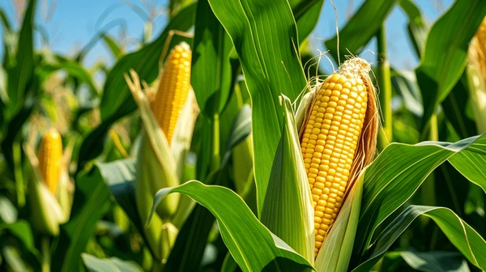
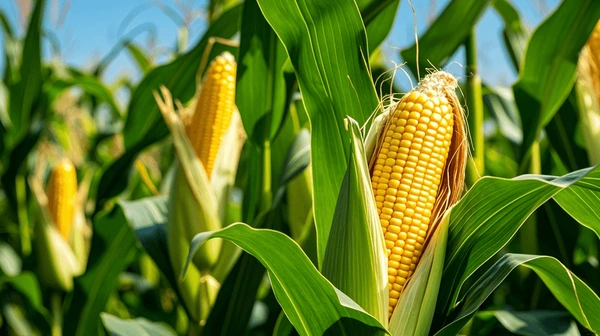

Sobre Nosotros
Los cultivos pueden clasificarse de varias formas, según la especie cultivada, el uso, la estacionalidad, la dependencia del agua. En Colombia, algunos de los cultivos más destacados son la palma de aceite, los frutales, el arroz, la caña de azúcar, el cacao, las hortalizas, la yuca, y el plátano.